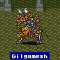
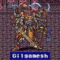
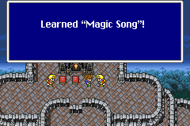

Story Line (7)
บุกปราสาท Exdeath
Exdeath Castle

ภายในมี Learning Magic ให้เก็บ 2 เวทย์ คือ
L2 Old จาก Magic Dragon (หากยังไม่ได้เก็บมาก่อนหน้านี้)
Aero 3 จาก Magic Dragon
Condemn จาก Exdeath (Boss)
เข้าไปภายในปราสาท เดินไปได้สักพักจะพบทางตัน
แต่ Cara จะขอพลังจาก Galuf ทำให้ Galuf (ที่เป็นวิญญาณ) ไปหา Kelgar
และ Kelgar ก็ได้ใช้พลังของตนเปิดเผยสภาพที่แท้จริงของปราสาท Exdeath
Summon Magic
Carbunkle
ขึ้นต่อไปด้านบนจะเจอ Summon Magic Carbunkle
โดยจะต้องไปยังพื้นที่ดังรูป ซึ่งเป็นจุดวาร์ป
จะไปโผล่หน้า Summon Magic Sphere
Boss : Carbunkle
Level : 1
HP : 15,000
เมื่อปราบได้ Carbunkle จะยอมรับในตัวพวก
Butz และยอมเป็น Summon Magic ให้
เดินไปอีกจะเจอกับ Gilgamesh อีกครั้ง
Boss : Gilgamesh

Level : 53
HP : 15,000
เมื่อสู้ไปได้สักพัก Gilgamesh จะแปลงร่าง (Transform)
Boss : Gilgamesh

Level : 67
HP : 15,000
เมื่อ Gilgamesh แปลงร่าง มันจะโชว์อาวุธใหม่ นั่นก็คือ Excailbur (Excalipur)
แต่ Gilgamesh จะโจมตีได้เพียง 30-50 เท่านั้น ทำให้มัน (และเรา) แปลกใจมาก
สู้ไปสักพักจะมีเสียงจาก Exdeath ดังขึ้นมา
Exdeath : "Gilgamesh แกมันไร้ประโยชน์สิ้นดี"
Gilgamesh : "อ๊า... ท่าน Exdeath อภัยให้ข้าด้วย"
Exdetah : "หุบปาก"
Exdetah : "X-Zone"
Gilgamesh : "อ๊าคคคคคคค"
Butz : " -_-; "
แล้วพวก Butz ก็ได้รับดาบ Excaibur
อันสุดแสนจะรุนแรงมาครอบครอง (โจมตีลด 1 ตลอด)
(แท้จริงแล้ว ดาบ Excalibur ที่ Gilgamesh ได้มานั้น เป็นของปลอม สังเกตได้จากชื่อ)
* Note : Gilgamesh ร่าง 2 ให้ใช้คำสั่ง ขโมย จะได้รับ Genji
Helmet หมวกที่ดีที่สุด
* Note : หากปราบ Gilgamesh ได้ก่อนที่มันจะแปลงร่าง จะไม่ได้รับดาบ
Excaibur ซึ่งมีผลทำให้ฉากจบเปลี่ยนไป
เดินขึ้นไปจะเจอกับ Exdeath
* Note : หากไปสู้กับ Exdeath แล้ว จะทำให้จบเนื้อเรื่องของ Galuf
World
เพราะฉะนั้นต้องแน่ใจก่อนว่า ได้เก็บสิ่งของต่างๆ จาก Galuf World ครบหมดแล้ว
- เก็บ Summon Magic Shoat แล้ว
- เก็บ Summon Magic Carbunkle แล้ว
- เก็บ Learning Magic ครบหมดแล้ว
Boss : Exdeath

Level : 66
HP : 32,768
Weakness : Holy
วิธีปราบ Exdeath ให้ได้ง่ายๆ ให้ใช้ Blue Magic
นั่นคือ L3 Flare โดยให้ใช้ Summon
Magic Golem ออกมาป้องกันการโจมตีทางกายภาพ
และเรียก Carbunkle ออกมาสะท้อนเวทย์มนต์
หากต้องการฟื้นฟู HP ให้ใช้ Whirlwind
จะสามารถชนะ Exdeath ได้อย่างง่ายดาย
* Note : อย่าลืมเก็บ Learning Magic Condemn
จาก Exdeath ด้วย
เมื่อปราบ Exdeath ได้ Crystal จะแตก และ...
เมื่อฟื้นขึ้นมาอีกครั้ง จะอยู่ที่ปราสาท Tycoon ???? หรือว่ากลับมายังโลกเดิมได้แล้ว
?
Castle Tycoon
เมื่อกลับเข้าไป เสนาบดี ก็ได้จัดเตรียมงานฉลองไว้แล้ว
และจับตัว Faris ซึ่งแท้จริงแล้วเป็นเจ้าหญิง Sarisa ไปแต่งตัวเสียใหม่
เมื่อกลับออกมา เจ้าหญิง Sarisa สวยมาก ถึงกับทำให้ Butz ตกใจ
เมื่องานเต้นรำเริ่มขึ้น Cara กลับออกไปที่ระเบียง
Butz จึงเข้าไปถาม เธอบอกว่า เธอไม่เสียใจที่ Galuf จากไป
เพราะ Galuf อยู่ในใจเธอ แต่ตอนนี้ Galuf บอกให้เธอรีบไป
ไป... ที่ไหนสักแห่ง
เมื่อได้ยินดังนั้น Butz จึงบอกว่า "ไปกันเถอะ"
เมื่อเดินออกมาหน้าปราสาท จะมีทหารวิ่งมาบอกว่า
สะพานที่สร้างข้ามแม่น้ำไปทางตะวันตกสร้างเสร็จแล้ว
ทำให้ Butz นึกถึง Boco และจะกลับไปเยี่ยมมันที่ถ้ำโจรสลัด
Pirate Cave
เมื่อไปถึงถ้ำโจรสลัด จะพบกับ Boco
ซึ่ง Cara สามารถพูดคุยกับ Boco ได้ (เหมือนกับที่คุยกับ Moogle)
อีกทั้ง Boco ยังมีแฟนด้วย ชื่อ Coco
และ Butz จะขอให้ Boco ออกผจญภัยกับตนอีกครั้ง
ดังนั้น Boco จึงไปร่ำลา Coco และบอกให้ดูแลลูกให้ดีด้วย
เพราะ Coco กำลังตั้งท้องนั่นเอง ^_^
เมื่อขี่ Boco สามารถเดินข้ามแม่น้ำเล็กๆ ได้
ให้เดินขึ้นไปทางทิศเหนือของปราสาท Tycoon
ข้ามแม่น้ำเล็กๆ ไปด้านซ้ายจะเจอหมู่บ้าน Tule
* Note : หากกลับเข้าไปในถ้ำโจรสลัด คุยกับคนที่เฝ้าที่สะพานเดินเรือ
จะทราบว่าทำไม Faris ที่มีชื่อเดิมว่า Sarisa ถึงได้ชื่อ Faris
Tule
ภายในหมู่บ้าน หากคุยกับชายแก่ เขาจะถามว่า Butz เป็นผู้เชี่ยวชาญหรือยัง
(Expert)
ถ้าตอบว่า ใช่ เขาจะบอกให้ไปบอกกับคนใน "บ้านฝึกสอนสำหรับผู้เริ่มต้น"
ซึ่งอยู่ด้านซ้าย
ภายในนั้น บอกกับผู้หญิงที่เฝ้าร้าน ว่าไม่ใช่เด็กฝึกหัดผจญภัยแล้วนะ
เธอจะบอกความลับของอาชีพ เริ่มต้น (ไม่มีอาชีพ) และอาชีพสุดท้าย Mime ให้ฟัง
นั่นคือ สองอาชีพนั้น จะได้รับความสามารถจากอาชีพอื่นๆ ที่ฝึกจน Master แล้ว
เช่น หากฝึกจนอาชีพ Knight, Black Mage, Thief เป็น Master ทั้ง 3 อาชีพแล้ว
อาชีพเริ่มต้น และ Mime จะได้รับ "ความแข็งแกร่ง" จากอาชีพ Knight
ได้รับ "ความสามารถด้านเวทย์มนต์" จากอาชีพ Black Mage
และได้รับ "ความสามารวิ่งเร็ว" และ "เห็นทางลับ" จากอาชีพ
Thief ติดตัวมาโดยอัตโนมัติ
อีกทั้ง อาชีพเริ่มต้น และ Mime ยังสามารถสวมใส่อุปกรณ์ต่างๆ ได้ทุกชิ้น
(ยกเว้น Ribbon)
ภายในหมู่บ้าน ผู้คนจะพูดถึงสิ่งผิดปรกติที่เกิดขึ้นกับผิวโลก
"มีเรือเหาะติดอยู่ทางใต้ของหมู่บ้าน บนแหลมที่มีรูปคล้ายนก"
"ทางตะวันตก มีถ้ำเกิดใหม่ ภายในถ้ำมีข่าวลือว่ามีสัตว์ประหลาดคล้ายเต่าอาศัยอยู่"
เมื่อออกจากหมู่บ้าน ผ่านไปยังช่องเขา
Boco กลับตกลงไปในหลุม ซึ่งจะโดนศัตรูจู่โจม
Boss : Antlion
Level : 34
HP : 8,100
Weakness : Water
เมื่อสู้ไปสักพัก Antlion จะหนีไป
เมื่อสู้ชนะ จะมีใครบางคนโยนเชือกลงมา
แต่ Butz พยายามจับแต่ก็จับไม่ได้
ที่แท้ Faris เป็นคนโยนเชือกลงมาแกล้ง Butz นี่เอง
Faris บอกว่า เธอไม่เหมาะที่จะเป็นเจ้าหญิง จึงออกมาผจญภัยกับพวก Butz
จากนั้นมุ่งหน้าลงใต้ จะเจอถ้ำแห่งหนึ่ง
Cave ????

ภายในถ้ำจะเจอกับ Guido อีกครั้ง
ซึ่ง Guido บอกว่า แท้จริงแล้ว เมื่อ 1,000 ปีก่อน
โลกของ Butz และโลกของ Cara เคยเป็นโลกเดียวกันมาก่อน
แต่ที่ต้องแยกออกเป็น 2 โลกก็เพราะ
มีการปิดกั้น "ช่องว่าง" (Void)
เมื่อ 1,000 ปีก่อน มีพลังชั่วร้าย Enuo ซึ่งมีพลังที่จะควบคุม "ช่องว่าง"
จึงทำให้เกิดสงครามขึ้นมา
มีการใช้พลังจากอาวุธศักดิ์สิทธิ์ทั้ง 12 เพื่อปราบ Enuo ลง
แต่ก็ไม่สามารถปิด "ช่องว่าง" ที่เกิดขึ้นได้
ดังนั้น จึงทำการแยก Crystal ออกเป็น 2 ส่วน
เมื่อ Crystal แยกออกเป็น 2 ส่วน โลกจึงแยกออกเป็น 2 โลกด้วย
และช่องว่างระหว่างโลกทั้งสองนั้นมีชื่อว่า "Cleft of Dimension"
ซึ่งมีไว้สำหรับปิดผนึก "Void"
ในระหว่างนั้น Elder Branch ที่ Cara เก็บไว้ ก็พุ่งออกมา
และปรากฏเป็น... Exdeath
ซึ่ง Exdeath ได้แอบซ่อนอยู่ใน Elder Branch ตั้งแต่ทีแรกแล้ว
และจุดประสงค์ที่แท้จริงของ Exdeath ก็คือ
พลังของ "Void" ที่ถูกปิดผนึกอยู่ใน "Cleft of Dimension"
นั่นเอง
ซึ่งนั่นก็เป็นเหตุผลที่ Exdeath ทำให้โลกกลับมารวมกันอีกครั้ง
จากนั้น Exdeath ก็ได้ทำให้ "Cleft of Dimension" ปรากฏขึ้นบนโลกนี้
แต่นั่นทำให้ปราสาท Tycoon ถูกดูดหายไปใน "Cleft of Dimension"

พวก Butz จึงเข้าไปต่อสู้กับ Exdeath แต่ก็พ่ายแพ้
Guido เห็นดังนั้น จึงเข้าไปสู้กับ Exdeath
แต่ก็ไม่สามารถต้านทานพลังของ Exdeath ได้
ทั้งหมดจึงโดนพลังของ Exdeath พัดกระเด็นหายไป
Legendary Library
พวก Butz ถูกพัดกระเด็นมาตกที่ห้องสมุด
ภายในนั้นมีหนังสือเกี่ยวกับวิธีปราบ Exdeath
พวก Butz รีบร้อนจะไป "Cleft of Dimension" เพื่อปราบ Exdeath
แต่ Guido ห้ามไว้ เพราะต้องมีพลังจากอาวุธศักดิ์สิทธิ์ทั้ง 12 ก่อน
จึงจะมีพลังเพียงพอที่จะไปต่อสู้กับสัตว์ประหลาดที่อาศัยอยู่ในนั้นได้
แต่ต้องปลดผนึกของอาวุธศักดิ์สิทธิ์เสียก่อน
โดยใช้หนังสือแห่งผนึก ซึ่งถูกแบ่งออกเป็น 2 ส่วน
แต่ตอนนี้กลับมารวมกันเป็นเล่มเดียวแล้ว
และหนังสือแห่งผนึก จะเป็นผู้นำทางนักรบแห่งแสง
การปลดผนึกอาวุธศักดิ์สิทธิ์ทั้ง 12 จะต้องใช้แผ่นจารึก 4 แผ่น
ซึ่งแผ่นจารึกทั้ง 4 นั้นถูกปกป้องด้วยธาตุทั้ง 4 คือ ดิน,
น้ำ,
ลม,
ไฟ
และเมื่อแผ่นจารึกถูกเคลื่อนย้าย ผู้รับใช้พลังศักดิ์สิทธิ์จะถูกปลดปล่อย
มหาเวทย์ดำ และขาว, เวทย์แห่งกาลเวลา Meteor
จ้าวแห่งทะเล Leviathan, จ้าวแห่งมังกร Bahamut
เส้นทางสู่แผ่นจารึกจะเปิดออก เมื่อนำหนังสือแห่งผนึก เข้าไปใกล้
เมื่อ Butz ได้รับ หนังสือแห่งผนึก
Guido ก็มาสั่งให้ไปค้นหาแผ่นจารึกแผ่นแรก ที่ถูกปกป้องด้วยธาตุ ดิน
ซึ่งอยู่ในปิรามิดในทะเลทราย
(แผ่นจารึกแผ่นอื่นๆ มีที่อยู่ดังนี้
แผ่นที่ 2 อยู่ในวิหารบนเกาะ ถูกปกป้องด้วยธาตุ ลม
แผ่นที่ 3 อยู่ลึกลงไปใต้ทะเล ถูกปกป้องด้วยธาตุ ไฟ
แผ่นที่ 4 อยู่ในน้ำตก ถูกปกป้องด้วยธาตุ น้ำ)
ภายในห้องสมุดมี Song ให้เก็บ 1 เพลง คือ Magic
Song

คุยกับชายบนดาดฟ้าก็จะได้รับมา
เมื่อออกมาจากห้องสมุด ด้านทิศเหนือใกล้ๆ จะเป็นปราสาท Surgate
สามารถเข้าไปสำรวจดูได้
* Note : ตอนนี้หากกลับไปสำรวจชั้นหนังสือที่ Butz เคยค้นหาหนังสือ
Playb...
และ Lenna จะถามว่า ทำอะไรนะ
แต่ตอนนี้ Lenna ไม่ได้อยู่ในกลุ่ม ????
(สงสัยจะเป็น Bug ของเกม)
* Note : บริเวณป่ารอบๆ ห้องสมุด มี Learning Magic ให้เก็บ 1 เวทย์
คือ
Aero 3 จาก Elm Gigas
จุดมุ่งหมายต่อไปคือ ปิรามิดในทะเลทราย
Next Story
8